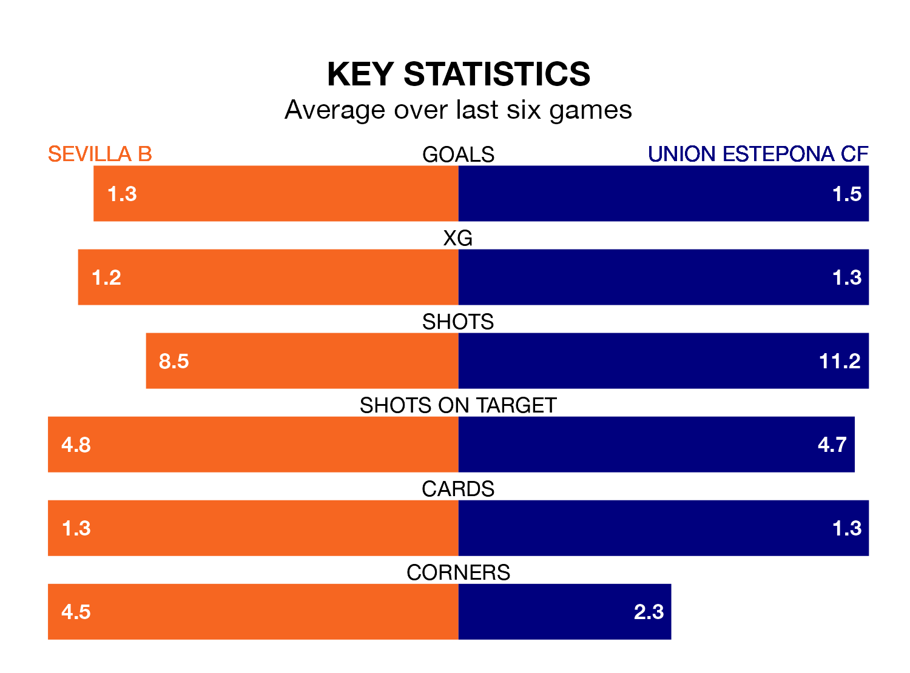

Two of the Segunda División RFEF Group 4's meanest defences go head-to-head on Saturday, when Sevilla B host Union Estepona CF.
Only one side – Águilas – has conceded fewer goals than Sevilla B to date: the home side have let in just 12 goals in 25 games.
Union Estepona have conceded 19 goals in 25 games, giving them the fourth tightest back line so far this season.
Key to Sevilla B's home form has been Alberto Flores, who has allowed 0.41 goals past him per 90 minutes, compared to 0.65 for Razak Brimah in the opposite net.
Sevilla B are second in the table after 25 games, of which they have won 13 and drawn nine, earning 48 points.
Union Estepona are four places behind the hosts in sixth, with 11 wins and seven draws putting them on 40 points.
Sevilla B are in mixed form in the Segunda División RFEF Group 4, with two wins and four draws from their last six games.
And also with two wins and four draws over that period, the away team's form is identical – they have both taken 10 points from 18.
Sevilla B's last match was on Saturday, a 1-1 draw against Manchego, with Mateo Mejia getting the goal for Sevilla B.
Union Estepona beat CD San Roque de Lepe 3-1 last time out, also on Saturday, with Arthur Renan Bonaldo, José Omar Perdomo Machado and Rubén Mesa Visiga on the scoresheet.
Updated: 09:34 (UTC), 08/03/24